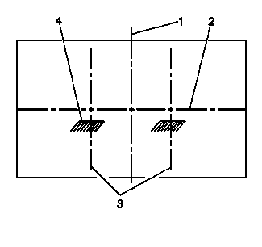

雾灯对光
准备程序
注意:
该车辆水平对光不可调。垂直对光由位于雾灯底部后端的调节螺母来调节。雾灯对光前，执行以下步骤：
1.
在车辆上装配好所有部件。
2.
将车辆停在水平表面上。
3.
停止可能影响车辆行驶高度的不必要的操作或工作。
4.
关闭车门，且检查并确认行李厢是空的。
5.
横向摇动车辆，使悬架稳定。
6.
确保燃油油位全满。
7.
确保轮胎已充气至适当的压力。
8.
确保驾驶员坐在车辆驾驶员座椅上，或放置一近似重物，约75 千克（165 磅）。
对光程序

1.
将车辆停在距离对光屏7.6 米（25 英尺）的地方。
2.
测量从雾灯中心到地面的距离。用这种测量方法，在车辆前端的对光屏上标记雾灯的水平中心 线(2)。
3.
点亮雾灯。对光屏上雾灯光束图像(4) 顶部应在雾灯透镜中心高度102 毫米（4 英寸）以下。
4.
必要时，使用前保险杠蒙皮内侧投影透镜上的调节螺钉调节雾灯,需要拆卸前车轮罩衬板，参见
前轮罩衬板的更换－左侧
、
前轮罩衬板的更换－右侧
。
5.
熄灭雾灯。